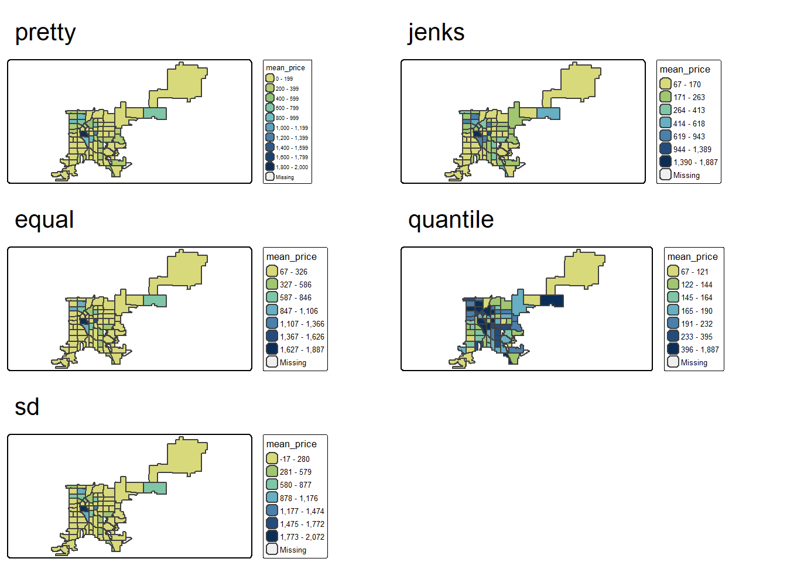

Chapter 5: Map Making (2) Spatial Data Manipulation
5.1 Lab Goals
This chapter continues to explore the techniques and analyses related to map-making. In Chapter 4, we have played with census data (e.g., tables and cartographic boundaries) to make choropleth maps. Today, we will use Airbnb data as an example to learn more advanced spatial analysis skills including:
- Converting .csv file to spatial data
- Spatial joining
- Mapping and aggregating point data
- Using functions in R
5.2 Good Practice
5.2.1 Organizing Folders & Sub-folders
Under the course folder, please create a folder called “lab5”. Next, in the lab5 folder, please create two sub-folders that one is called “data” and another one is “plot”.
5.2.2 Data
In this lab, we will explore data sources other than US Census Bureau. Particularly, we will play with Airbnb data for the city of Denver (CO).
AirBnb has published datasets related to listings, reviews, and neighborhoods in major cities or tourist destinations all over the world. Here you can find the data dictionary of Airbnb data.
Please follow the steps below to download data, unzip it and move the data to the required folder.
- Go to https://github.com/fuzhen-yin/uccs_geoviz/blob/main/archive/data/lab5_data.zip
- Download the file “lab5_data.zip”
- Unzip folder “lab5_data.zip”
- Move all files from the “lab5_data” folder to the “data” folder under “lab5” see Step 5.2.1
If there you have any questions about the above-mentioned steps, please refer to Chapter 3.2.3 for detailed instructions.
5.2.3 Launching R Studio
Again, we would like to start a new project from scratch with a clean R Script. Please do the following steps. If you have any questions about these steps, please refer to the relevant chapters for help.
- Step 1: Make sure all existing R projects are properly
closed.
- If not, please close it by going to File –> Close Project –> Save changes (see Chapter 2.5).
- Step 2: Create a New Project using Existing Directory, navigate to lab5, click open, then Create Project. (see Chapter 1.3).
- Step 3: Create a New Script by go to File –> New File –> R Script. Save the script by giving it a proper name.
5.2.4 Before Start
Heads-Up!
All scripts are non-copyable. Here are some coding standards and best practices to follow:
- Use comments to explain code (try to annotate the codes by yourself).
- Ensure there is sufficient whitespace between lines of text to improve legibility.
- Consistent variable naming
- When naming a new column, creating a new folder or file, please:
- Avoid special characters such as “, * _ = &” .
- Avoid adding blank spaces. For example, instead of using a name as “plot 1” (x), please use “plot_1” (✓).
5.3 Viz: Mapping Airbnb Listings in Denver
We start with mapping Airbnb listings. Unfortunately, there is no Airbnb data for Colorado Springs. But it has data for [Denver]{https://insideairbnb.com/denver/}.
Load libraries. We have seen most of these libraries except for
geojsonsf which is often used to read spatial data in
.geojson format and convert it to simple features.
5.3.1 Libraries & Data
## install packages
install.packages("geojsonsf")
install.packages("reshape2")
install.packages("corrplot")# library
library(sf) # simple features
library(tmap) # mapping
library(ggplot2) # plot
library(dplyr) # data manipulation
library(geojsonsf) # geojson
library(corrplot) # correlation matrix
library(reshape2) # one-hot encoding Read data
# US Cartographic Boundaries: Cities & towns in Colorado
co_place <- st_read("data/cb_2023_08_CO_place_500k/cb_2023_08_place_500k.shp")
# Airbnb data
ab_listing <- read.csv("data/airbnb_denver/listings.csv")
ab_nghbr <- geojson_sf("data/airbnb_denver/neighborhood.geojson")Examine data. Please have a look at these tables, and report:
[Q1]: How many records in “co_place”?
[Q2]: Which columns could be used to extract “Denver”
from “co_place”?
[Q3]: In “ab_nghbr”, how many
records (listings)?
[Q4]: In “ab_nghbr”, which two
columns contain spatial information and could be used for mapping?
View(co_place)
View(ab_nghbr)
View(ab_listing)5.3.2 Exploratory Analysis of Airbnb Listing
Check columns information in “ab_nghbr”
# column info
str(ab_listing)## 'data.frame': 5016 obs. of 16 variables:
## $ id : num 360 364 590 592 1940 ...
## $ name : chr "Sit in the Peaceful Garden of the Chickadee Cottage in LoHi" "Lodo / RiNo LOFT via airport train" "Comfortable - and a great value!" "private" ...
## $ host_id : int 666 783 933 933 2150 990 135298 666 745200 923646 ...
## $ host_name : chr "Jennifer & Giovanni" "Jason" "Jill" "Jill" ...
## $ latitude : num 39.8 39.8 39.8 39.8 39.7 ...
## $ longitude : num -105 -105 -105 -105 -105 ...
## $ room_type : chr "Entire home/apt" "Entire home/apt" "Private room" "Private room" ...
## $ price : int 161 179 70 64 88 43 108 137 169 36 ...
## $ minimum_nights : int 30 185 1 15 1 30 4 3 29 29 ...
## $ number_of_reviews : int 181 87 726 175 183 236 169 699 11 133 ...
## $ last_review : chr "2024-03-02" "2016-04-26" "2024-05-22" "2024-06-02" ...
## $ reviews_per_month : num 2.53 0.47 3.91 0.94 2.02 1.36 1.01 4.13 0.07 0.85 ...
## $ calculated_host_listings_count: int 2 1 2 2 1 1 1 2 4 1 ...
## $ availability_365 : int 110 358 236 219 231 320 318 65 302 150 ...
## $ number_of_reviews_ltm : int 3 0 24 7 51 2 19 42 0 4 ...
## $ license : chr "2017-BFN-0002177" "" "2021-BFN-0000578" "2021-BFN-0000578" ...For all listings in Denver, count different room types. The
function table() builds a contingency table.
[Q5]: Report the number of listings of different
room types.
# count room types
table(ab_listing$room_type)Create a barplot to show the number of different room types.
# quick plot of room types
table(ab_listing$room_type) %>% barplot()Descriptive statistics listings’ prices.
# statistics
summary(ab_listing$price)## Min. 1st Qu. Median Mean 3rd Qu. Max. NA's
## 17.0 95.0 138.0 382.7 219.0 99713.0 378There are 378 NA (missing values) Let’s remove all rows with NA values
# remove NA values in the column "price"
ab_listing_cln <- ab_listing[!is.na(ab_listing$price),]Extract two columns room_type, price and save them as a new dataframe called data_price
data_price <- ab_listing_cln[c('room_type', 'price')]
head(data_price)## room_type price
## 1 Entire home/apt 161
## 2 Entire home/apt 179
## 3 Private room 70
## 4 Private room 64
## 5 Entire home/apt 88
## 6 Private room 43Boxplot to explore the distribution of prices based on room type
ggplot(data_price, aes(x=as.factor(room_type), y=price)) +
stat_boxplot(fill="slateblue", alpha=0.2) +
xlab("price")Zoom in to the price range [0, 1500].
[Q6]: You will see a Warning Message: Removed 25 rows containing non-finite outside the scale range. What does this mean?
ggplot(data_price, aes(x=as.factor(room_type), y=price)) +
stat_boxplot(fill="slateblue", alpha=0.2) +
xlab("listing room type") +
scale_y_continuous(limits = c(0, 1500))## Warning: Removed 25 rows containing non-finite outside the scale range
## (`stat_boxplot()`).
5.3.3 Correlation Matrix
Correlations between numeric variables
[Q7]: What columns in ab_listing_cln
have numeric values (e.g., integers, floats)?
# check columns in "ab_listing_cln" and identify numeric columns
str(ab_listing_cln)## 'data.frame': 4638 obs. of 16 variables:
## $ id : num 360 364 590 592 1940 ...
## $ name : chr "Sit in the Peaceful Garden of the Chickadee Cottage in LoHi" "Lodo / RiNo LOFT via airport train" "Comfortable - and a great value!" "private" ...
## $ host_id : int 666 783 933 933 2150 990 135298 666 745200 923646 ...
## $ host_name : chr "Jennifer & Giovanni" "Jason" "Jill" "Jill" ...
## $ latitude : num 39.8 39.8 39.8 39.8 39.7 ...
## $ longitude : num -105 -105 -105 -105 -105 ...
## $ room_type : chr "Entire home/apt" "Entire home/apt" "Private room" "Private room" ...
## $ price : int 161 179 70 64 88 43 108 137 169 36 ...
## $ minimum_nights : int 30 185 1 15 1 30 4 3 29 29 ...
## $ number_of_reviews : int 181 87 726 175 183 236 169 699 11 133 ...
## $ last_review : chr "2024-03-02" "2016-04-26" "2024-05-22" "2024-06-02" ...
## $ reviews_per_month : num 2.53 0.47 3.91 0.94 2.02 1.36 1.01 4.13 0.07 0.85 ...
## $ calculated_host_listings_count: int 2 1 2 2 1 1 1 2 4 1 ...
## $ availability_365 : int 110 358 236 219 231 320 318 65 302 150 ...
## $ number_of_reviews_ltm : int 3 0 24 7 51 2 19 42 0 4 ...
## $ license : chr "2017-BFN-0002177" "" "2021-BFN-0000578" "2021-BFN-0000578" ...Extract only numeric columns and save as a new dataframe data_num
lt_num_col <- c('price', 'minimum_nights', 'number_of_reviews', 'reviews_per_month', 'availability_365')
data_num <- ab_listing_cln[lt_num_col]
# remove NA
data_num <- na.omit(data_num)Calculate correlation between numeric columns in data_num
## calculate the correlation matrix
m <- cor(data_num)
print(m)## price minimum_nights number_of_reviews
## price 1.000000000 -0.02371576 -0.007670987
## minimum_nights -0.023715762 1.00000000 -0.203996638
## number_of_reviews -0.007670987 -0.20399664 1.000000000
## reviews_per_month -0.004795330 -0.38285847 0.629794109
## availability_365 0.034870555 0.16650887 -0.082388843
## reviews_per_month availability_365
## price -0.00479533 0.03487055
## minimum_nights -0.38285847 0.16650887
## number_of_reviews 0.62979411 -0.08238884
## reviews_per_month 1.00000000 -0.13221878
## availability_365 -0.13221878 1.00000000Correlation plot 1
corrplot(m, method = 'square', type = 'lower', diag = FALSE)Correlation plot 2
corrplot(m, method = 'ellipse', type = 'upper')5.3.4 Create Spatial Data from Table
Check object class of “ab_listing”
# class
class(ab_listing_cln)“ab_listing” is a data frame. The two columns longitude
and latitude contain spatial information of listings. Let’s
use these two columns to convert “ab_listing” to spatial data (simple
features) and save it as a new variable sf_ab_listing.
[Q8]: Compared to the data frame “ab_listing”, which new column has been added to “sf_ab_listing”?
# table to simple features
sf_ab_listing <- st_as_sf(ab_listing_cln,
coords = c("longitude", "latitude"),
crs=4326)
# class of sf_ab_listing
class(sf_ab_listing)## [1] "sf" "data.frame"# open data
head(sf_ab_listing)## Simple feature collection with 6 features and 14 fields
## Geometry type: POINT
## Dimension: XY
## Bounding box: xmin: -105.0021 ymin: 39.72021 xmax: -104.9111 ymax: 39.76672
## Geodetic CRS: WGS 84
## id name host_id
## 1 360 Sit in the Peaceful Garden of the Chickadee Cottage in LoHi 666
## 2 364 Lodo / RiNo LOFT via airport train 783
## 3 590 Comfortable - and a great value! 933
## 4 592 private 933
## 5 1940 Baker Studio: Private-full kitchen-W/D-walkable 2150
## 6 21745 Alexandra's King Bed Room Long-term Only 990
## host_name room_type price minimum_nights number_of_reviews
## 1 Jennifer & Giovanni Entire home/apt 161 30 181
## 2 Jason Entire home/apt 179 185 87
## 3 Jill Private room 70 1 726
## 4 Jill Private room 64 15 175
## 5 Joanne Entire home/apt 88 1 183
## 6 Alexandra Private room 43 30 236
## last_review reviews_per_month calculated_host_listings_count availability_365
## 1 2024-03-02 2.53 2 110
## 2 2016-04-26 0.47 1 358
## 3 2024-05-22 3.91 2 236
## 4 2024-06-02 0.94 2 219
## 5 2024-06-27 2.02 1 231
## 6 2024-04-13 1.36 1 320
## number_of_reviews_ltm license geometry
## 1 3 2017-BFN-0002177 POINT (-105.0021 39.76641)
## 2 0 POINT (-104.9791 39.76672)
## 3 24 2021-BFN-0000578 POINT (-104.9111 39.75511)
## 4 7 2021-BFN-0000578 POINT (-104.9111 39.75481)
## 5 51 2018-BFN-0002596 POINT (-104.9975 39.72021)
## 6 2 POINT (-104.9771 39.7449)5.3.5 Mapping
Quick Map of three datasets:
- sf_ab_listing: spatial points of Airbnb listings
- co_place: cities and towns in Colorado
- ab_nghbr: neighborhood boundaries in Denver
plot(ab_nghbr$geometry)plot(co_place$geometry)plot(sf_ab_listing$geometry)5.4 Coordinate Reference System (CRS)
Now we have three simple feature objects including
co_place collected from US Census, ab_nghbr
and sf_ab_listing from Airbnb data. Let’s
check their Coordinate Reference System (CRS) and geometry types.
[Q9]: Please report the CRS and geometry types of:
co_placeab_nghbrsf_ab_listing
# Check CRS & geometry types
co_place$geometry
ab_nghbr$geometry
sf_ab_listing$geometryThe World Geodetic System 1984 (WGS 84) is a global reference system used for determining positions on the Earth’s surface. North American Datum of 1983 (NAD 83) is the horizontal and geometric control datum for the United States, Canada, Mexico, and Central America.
Let’s use NAD 83 as the main CRS for this lab and convert WGS 84 to NAD 83.
# convert "ab_nghbr" and "sf_ab_listing" from WGS84 to NAD83
ab_nghbr <- st_transform(ab_nghbr, st_crs(co_place))
sf_ab_listing <- st_transform(sf_ab_listing, st_crs(co_place))# check their coordinate systems again, they all share the same CRS which is NAD83
ab_nghbr$geometry
sf_ab_listing$geometry 5.5 Viz: Combine Multiple Layers for Mapping
5.5.1 AirBnb Listings in Denver
MAP1: Quick interactive mapping of Airbnb listings in Denver.
# set mode to "view" for interactive mapping
tmap_mode("view")
# MAP1: basic map of Airbnb listing in denver
tm_shape(sf_ab_listing) + tm_dots()[Q10]: Run the chunk of code below and try to explain the purposes of the following commands:
tm_dots()size = "price"fill = "room_type"fill_alpha=0.5fill.scale = tm_scale_categorical(values = 'cols4all.friendly9')
# improve map1
tm_shape(sf_ab_listing) + tm_dots(size = 'price',
fill = "room_type", fill_alpha=0.5,
fill.scale = tm_scale_categorical(values = 'cols4all.friendly9'),
size.scale = tm_scale_continuous(trans='log1p', values.scale = 0.7))5.5.2 Neighborhoods in Denver
We have loaded the spatial data about neighborhoods in Denver in Step 5.3.1. .
Have a look at the neighborhood data ab_nghbr.
head(ab_nghbr)## Simple feature collection with 6 features and 1 field
## Geometry type: MULTIPOLYGON
## Dimension: XY
## Bounding box: xmin: -105.0253 ymin: 39.66038 xmax: -104.9594 ymax: 39.79832
## Geodetic CRS: NAD83
## neighbourhood geometry
## 1 Chaffee Park MULTIPOLYGON (((-104.9981 3...
## 2 Sunnyside MULTIPOLYGON (((-104.9982 3...
## 3 Highland MULTIPOLYGON (((-104.9982 3...
## 4 University MULTIPOLYGON (((-104.9594 3...
## 5 Globeville MULTIPOLYGON (((-104.9688 3...
## 6 Jefferson Park MULTIPOLYGON (((-105.0095 3...Let’s do a quick map of it. Hint: the following command will produce an error message (no worries, errors are a natural and inevitable part of coding).
The error message “Error: Loop 0 is not valid: Edge 44 is degenerate (duplicate vertex)” suggests that one geometry in the ab_nghbr is invalid.
# quick map
tm_shape(ab_nghbr) + tm_polygons(fill_alpha = 0.5, lwd = 1) + tm_text(text = "neighbourhood", size = 0.3)It seems that the data ab_nghbr contains some invalid
polygons. Let’s make them valid using the function
st_make_valid().
# make valid
ab_nghbr <- st_make_valid(ab_nghbr)MAP2: neighborhoods in Denver
# change mapping mode to 'plot' for static map
tmap_mode("plot")## ℹ tmap modes "plot" - "view"
## ℹ toggle with `tmap::ttm()`#map
map2_den_nghbr <- tm_shape(ab_nghbr) + tm_polygons(fill_alpha = 0.5, lwd = 1) +
tm_compass() + tm_scalebar(width = 10) +
tm_text(text = "neighbourhood", size = 0.3)
map2_den_nghbrpdf("plot/map2_denver_neighborhood.pdf", height = 10, width = 10)
print(map2_den_nghbr)
dev.off()5.5.3 Cities and Towns in Colorado
MAP3: Cities and towns in Colorado
tmap_mode("view")
tm_shape(co_place) + tm_polygons(fill="#81D8D0", fill_alpha = 0.3, lwd = 1)# Let's extract the row of Denver
den_city <- co_place %>% filter(NAME == "Denver")
tm_shape(den_city) + tm_polygons(fill="pink", fill_alpha = 0.3, lwd = 2)5.5.4 Combine all layers together
MAP4: Overlap three maps together (listing, neighborhoods, Denver city boundary)
[Q11]: Provide a screenshot of “map3_denver_airbnb_listing_point.pdf”.
# plot
tmap_mode("plot")
map_den_listing <- tm_shape(den_city) + tm_polygons(fill_alpha = 0, lwd = 2) +
tm_shape(ab_nghbr) + tm_polygons(fill_alpha = 0, lwd = 1) +
tm_shape(sf_ab_listing) + tm_dots(size = 'price',
fill = "room_type",fill_alpha=0.3,
fill.scale = tm_scale_categorical(values = 'cols4all.friendly9'),
size.scale = tm_scale_continuous(trans='log1p', values.scale = 0.5)) +
tm_compass() + tm_scalebar(width = 15) +
tm_layout(legend.position = c("left", "top"), frame = F)
map_den_listingpdf("plot/map3_denver_airbnb_listing_point.pdf", width = 12, height = 8)
print(map_den_listing)
dev.off()5.6 Viz: Airbnb Listings in Neighborhoods
While the data sf_ab_listing tells us where the listings
are located, and the data ab_nghbr shows the boundaries of
neighborhoods. But they are not enough. Let’s say we want to know more
about the spatial distribution of those listings in
terms of:
how many listings are located in each neighborhoods and also their mean prices?
This section performs analysis and produces visualizations of Airbnb listings at the neighborhood level.
5.6.1 Spatial Joining
Examine the sf_ab_listing data.
# count columns in "sf_ab_listing"
ncol(sf_ab_listing)## [1] 15Spatial joining two data sf_ab_listing and
ab_nghbr using the function st_join() as long
as the geometries intersect. Save the joined data as a new variable
sf_ab_listing_nghbr.
# spatial join to the left of the object
sf_ab_listing_nghbr <- st_join(sf_ab_listing, ab_nghbr,
left = T, join = st_intersects)After spatial joining, the new data sf_ab_listing_nghbr
has a new column compared to sf_ab_listing. Please compare
those two data and answer [Q12]: What is the new column
has been added to sf_ab_listing_nghbr?
# count columns in the new variable "sf_ab_listing_nghbr"
ncol(sf_ab_listing_nghbr)## [1] 16# open data
head(sf_ab_listing_nghbr)## Simple feature collection with 6 features and 15 fields
## Geometry type: POINT
## Dimension: XY
## Bounding box: xmin: -105.0021 ymin: 39.72021 xmax: -104.9111 ymax: 39.76672
## Geodetic CRS: NAD83
## id name host_id
## 1 360 Sit in the Peaceful Garden of the Chickadee Cottage in LoHi 666
## 2 364 Lodo / RiNo LOFT via airport train 783
## 3 590 Comfortable - and a great value! 933
## 4 592 private 933
## 5 1940 Baker Studio: Private-full kitchen-W/D-walkable 2150
## 6 21745 Alexandra's King Bed Room Long-term Only 990
## host_name room_type price minimum_nights number_of_reviews
## 1 Jennifer & Giovanni Entire home/apt 161 30 181
## 2 Jason Entire home/apt 179 185 87
## 3 Jill Private room 70 1 726
## 4 Jill Private room 64 15 175
## 5 Joanne Entire home/apt 88 1 183
## 6 Alexandra Private room 43 30 236
## last_review reviews_per_month calculated_host_listings_count availability_365
## 1 2024-03-02 2.53 2 110
## 2 2016-04-26 0.47 1 358
## 3 2024-05-22 3.91 2 236
## 4 2024-06-02 0.94 2 219
## 5 2024-06-27 2.02 1 231
## 6 2024-04-13 1.36 1 320
## number_of_reviews_ltm license neighbourhood
## 1 3 2017-BFN-0002177 Highland
## 2 0 Five Points
## 3 24 2021-BFN-0000578 North Park Hill
## 4 7 2021-BFN-0000578 North Park Hill
## 5 51 2018-BFN-0002596 Baker
## 6 2 North Capitol Hill
## geometry
## 1 POINT (-105.0021 39.76641)
## 2 POINT (-104.9791 39.76672)
## 3 POINT (-104.9111 39.75511)
## 4 POINT (-104.9111 39.75481)
## 5 POINT (-104.9975 39.72021)
## 6 POINT (-104.9771 39.7449)5.6.2 Preparation
Extract columns from sf_ab_listing_nghbr and save it as
a new variable df_listing_nghbr for analysis.
# columns for analysis
lt_airbnb_cols <- c("neighbourhood", "room_type", "price")
# extract and save as a new variable
df_listing_nghbr <- sf_ab_listing_nghbr[lt_airbnb_cols]
# remove geometry for more efficient calculation
st_geometry(df_listing_nghbr) <- NULL
# each row is ONE airbnb lising
df_listing_nghbr["n_listing"] <- 15.6.3 Analysis: Statistics
Count room types in each neighborhood using one-hot encoding.
One-hot encoding is a commonly used technique in machine learning to convert categorical variables into numerical values.
Let’s borrow this concept and apply it for data cleaning and processing.
df_nghbr <- reshape2::dcast(df_listing_nghbr,
neighbourhood ~ room_type,
fill = 0, value.var = "n_listing",
fun.aggregate = length)[Q13]: Have a look at the table “df_nghbr”, please briefly explain what this table is about?
View(df_nghbr)Calculate the statistics of listings’ prices at neighborhood level in terms of mean, median, max, and min prices.
# statistics of prices at neighborhood level
df_nghbr_2 <- df_listing_nghbr %>% group_by(neighbourhood) %>%
summarise(mean_price = mean(price),
median_price = median(price),
max_price = max(price),
min_price = min(price),
n_ttl = sum(n_listing))Join the two data frames df_nghbr and
df_nghbr_2.
# join two neighborhood tables
df_nghbr_2 <- left_join(df_nghbr_2, df_nghbr, by=c("neighbourhood"="neighbourhood"))
# see the first 5 rows
head(df_nghbr_2, 5)## # A tibble: 5 × 10
## neighbourhood mean_price median_price max_price min_price n_ttl
## <chr> <dbl> <dbl> <int> <int> <dbl>
## 1 Athmar Park 152. 128 688 28 53
## 2 Auraria 186. 175 293 99 4
## 3 Baker 944. 110 99713 40 123
## 4 Barnum 154. 116. 421 63 32
## 5 Barnum West 139. 115 277 45 23
## # ℹ 4 more variables: `Entire home/apt` <dbl>, `Hotel room` <dbl>,
## # `Private room` <dbl>, `Shared room` <dbl>5.6.4 Calculation: Percentage
Calculate percentage of listings of different room types.
## calculate percentage for columns 7:10
df_nghbr_2[, 7:10]## # A tibble: 77 × 4
## `Entire home/apt` `Hotel room` `Private room` `Shared room`
## <dbl> <dbl> <dbl> <dbl>
## 1 40 0 13 0
## 2 4 0 0 0
## 3 109 0 14 0
## 4 30 0 2 0
## 5 19 0 4 0
## 6 3 0 3 0
## 7 9 0 1 0
## 8 160 0 6 0
## 9 121 0 2 0
## 10 103 2 17 4
## # ℹ 67 more rowsdf_nghbr_2[, 7:10] <- 100 * df_nghbr_2[, 7:10] / df_nghbr_2$n_ttl
# check results
print(df_nghbr_2[, 7:10])## # A tibble: 77 × 4
## `Entire home/apt` `Hotel room` `Private room` `Shared room`
## <dbl> <dbl> <dbl> <dbl>
## 1 75.5 0 24.5 0
## 2 100 0 0 0
## 3 88.6 0 11.4 0
## 4 93.8 0 6.25 0
## 5 82.6 0 17.4 0
## 6 50 0 50 0
## 7 90 0 10 0
## 8 96.4 0 3.61 0
## 9 98.4 0 1.63 0
## 10 81.7 1.59 13.5 3.17
## # ℹ 67 more rowsJoin the attribute table df_nghbr_2 to the spatial data
ab_nghbr.
## join "df_nghbr_2" with the simple feature "ab_nghbr"
ab_nghbr_var <- left_join(ab_nghbr, df_nghbr_2, by="neighbourhood" )
## check the results
head(ab_nghbr_var)## Simple feature collection with 6 features and 10 fields
## Geometry type: MULTIPOLYGON
## Dimension: XY
## Bounding box: xmin: -105.0253 ymin: 39.66038 xmax: -104.9594 ymax: 39.79832
## Geodetic CRS: NAD83
## neighbourhood mean_price median_price max_price min_price n_ttl
## 1 Chaffee Park 209.6571 152 535 37 35
## 2 Sunnyside 879.7308 166 85428 55 130
## 3 Highland 619.3210 167 99570 40 271
## 4 University 182.0606 109 1126 45 33
## 5 Globeville 116.5000 96 299 59 38
## 6 Jefferson Park 305.4182 158 9999 41 110
## Entire home/apt Hotel room Private room Shared room
## 1 91.42857 0 8.571429 0
## 2 93.07692 0 6.923077 0
## 3 95.20295 0 4.797048 0
## 4 75.75758 0 24.242424 0
## 5 89.47368 0 10.526316 0
## 6 84.54545 0 15.454545 0
## geometry
## 1 MULTIPOLYGON (((-104.9981 3...
## 2 MULTIPOLYGON (((-104.9984 3...
## 3 MULTIPOLYGON (((-104.9984 3...
## 4 MULTIPOLYGON (((-104.96 39....
## 5 MULTIPOLYGON (((-104.9688 3...
## 6 MULTIPOLYGON (((-105.0101 3...5.6.5 Mapping
MAP4: Quick map for all variables in ab_nghbr_var.
[Q14]: paste the screenshot of “map4_quick_plot_neighborhoods_airbnb.pdf”.
# quick map & export
plot(ab_nghbr_var)
In mapping, Data Classification refers to the
process of breaking data into different groups. tmap provides different ways to classify data
such as:
pretty(default) rounds breaks into whole numbers where possible and spaces them evenly.jenksthat minimize the within-group variance and maximize the between-group variance.equaldivides the range of values into n equal-sized intervals.quantilecreates several classes with exactly the same number of objects (e.g., spatial features), but having intervals of various lengths.
sdcalculates a standard deviation of a given variable, and next use this value as the break width.
Let’s explore different classification methods and their impacts on
mappings by visualizing two variables mean_price and
n_ttl (number of listings in each neighborhood).
Create a function for mapping (it’s okay that you don’t understand the code below).
# write a function
f_map_airbnb <- function(data, column, mapping_style, n_breaks, c_palette){
p <- tm_shape(data) +
tm_polygons(fill = as.character(column),
fill.scale = tm_scale_intervals(style = as.character(mapping_style),
n=n_breaks,
values = as.character(c_palette) )) +
tm_title(text = as.character(mapping_style))
return(p)
}MAP5: Mean listing price in neighborhoods
# histogram - quick
hist(ab_nghbr_var$mean_price)[Q15]: In the pidf “map5_denver_neighborhood_meanprice_classifications.pdf”, discuss which data classification method do you like the most (please pay attention both to the map and the legends).
# number of breaks & color palette
n_brk <- 7
color_pal<- "met.hokusai3"
# mapping using different styles
map5_pretty <- f_map_airbnb(ab_nghbr_var, "mean_price", "pretty", n_brk, color_pal)
map5_jenks <- f_map_airbnb(ab_nghbr_var, "mean_price", "jenks", n_brk, color_pal)
map5_equal <- f_map_airbnb(ab_nghbr_var, "mean_price", "equal", n_brk, color_pal)
map5_quantile <- f_map_airbnb(ab_nghbr_var, "mean_price", "quantile", n_brk, color_pal)
map5_sd <- f_map_airbnb(ab_nghbr_var, "mean_price", "sd", n_brk, color_pal)
## combine all maps together
map5_meanprice <- tmap_arrange(map5_pretty,map5_jenks,
map5_equal, map5_quantile,
map5_sd,
ncol = 2)
map5_meanprice
## export
pdf("plot/map5_denver_neighborhood_meanprice_classifications.pdf", width = 10, height = 10)
print(map5_meanprice)
dev.off()MAP6: Total rooms listing price in neighborhoods.
# histogram
hist(ab_nghbr_var$n_ttl)# number of breaks
n_brk <- 7
color_pal <- "carto.blu_yl"
map6_pretty <- f_map_airbnb(ab_nghbr_var, "n_ttl", "pretty", n_brk, color_pal)
map6_jenks <- f_map_airbnb(ab_nghbr_var, "n_ttl", "jenks", n_brk, color_pal)
map6_equal <- f_map_airbnb(ab_nghbr_var, "n_ttl", "equal", n_brk, color_pal)
map6_quantile <- f_map_airbnb(ab_nghbr_var, "n_ttl", "quantile", n_brk, color_pal)
map6_sd <- f_map_airbnb(ab_nghbr_var, "n_ttl", "sd", n_brk, color_pal)
## combine all maps together
map6_ttl <- tmap_arrange(map6_pretty, map6_jenks,
map6_equal, map6_quantile,
map6_sd,
ncol = 2)
map6_ttl## export
pdf("plot/map6_denver_neighborhood_count_total_listings_classifications.pdf", width = 10, height = 10)
print(map6_ttl)
dev.off()[Q16]: In map6_denver_neighborhood_count_total_listings_classifications.pdf, please discuss which data classification method do you like the most (please pay attention both to the map and the legends).
5.7 Close & Exit
Congratulations!! You have completed the entire tutorial by typing the script by yourself!! Excellent work.
Please go “File”–> “Close Project” – a pop window asking “Do you want to save these changes” –> “Yes”.
Don’t forget to submit the lab5 report and your script to Canvas.